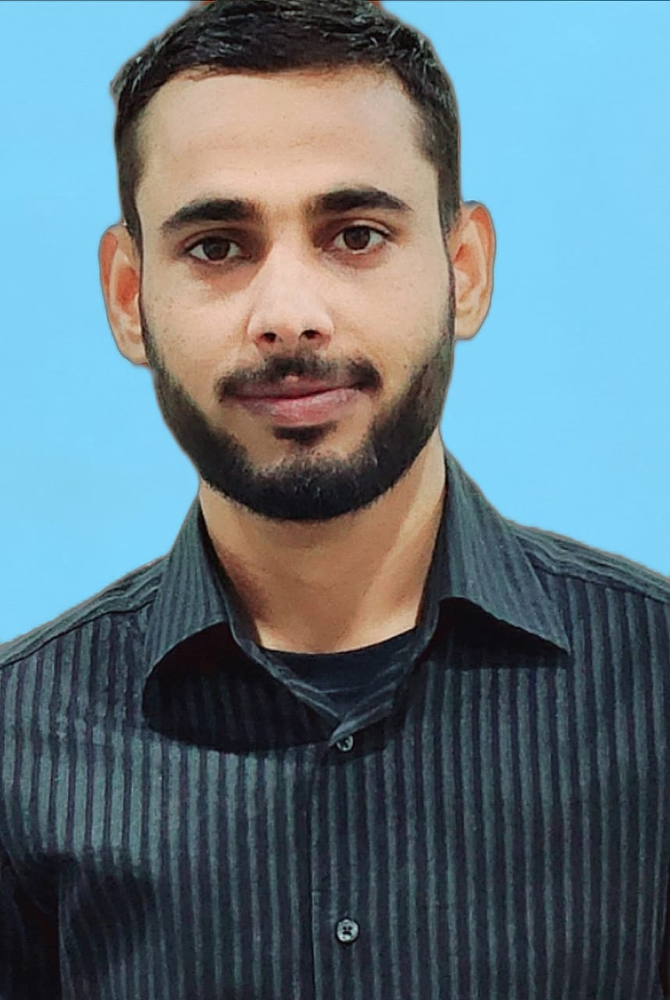

Introduction

I am Muhammad Usman, a professional dedicated to bridging the gap between traditional municipal operations and modern digital solutions. My unique career path has allowed me to combine practical on-ground experience in waste management with expertise in GIS mapping and application development. This combination enables me to design and implement efficient workflows that optimize city operations, reduce costs, and improve service quality. I am passionate about leveraging technology to solve real-world challenges and thrive in dynamic environments where continuous learning and adaptation are essential.